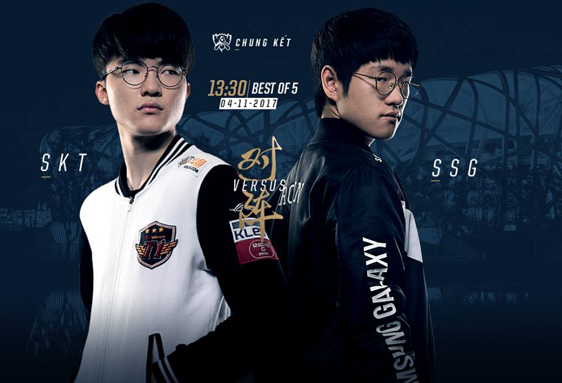

LEAGUE OF LEGENDS
- HOME
- CHAMPIONS
- NEWS
- SIGN UP
- LOG IN
LEAGUE OF LEGENDS
Đây là trận đấu khép lại một kỳ Chung kết thế giới và cũng là khép lại mùa giải 2017. Đó là trận Chung kết của giải vô địch cấp thế giới, nơi 2 đội tuyển mạnh nhất đối đầu với nhau. Không có danh hiệu nào danh giá hơn chức vô địch cho đội thắng cuộc.
Cả SSG lẫn SKT đều đã trải qua hơn những trận đấu vô cùng khốc liệt để có mặt tại đây. Con đường đến với trận chung kết rất gian nan và cả hai đều đang ở rất gần với vinh quang. Bây giờ hoặc không bao giờ.
Thời gian – địa điểm
Trận chung kết sẽ được diễn ra ở sân vận động Tổ Chim, Bắc Kinh, Trung Quốc. Trận đấu sẽ diễn ra ngay khi lễ khai mạc kết thúc, dự kiến là 14h00 ngày 4/11/2017.
Tôi có thể xem nó ở đâu?
Lễ khai mạc và trận chung kết sẽ được phát sóng và bình luận độc quyền tại Garena.live và kênh Youtube của Vietnam Esports TV, các bạn hãy chú ý đón xem.
Lịch trình của trận chung kết

Một ngày trước khi trận CKTG 2017 diễn ra, Riot sẽ tổ chức một buổi concert 90 phút với sự góp mặt của các tên tuổi nổi tiếng như Alan Walker, Nicki Taylor, Mako, Lunity, nhóm Pentakill...
Buổi concert diễn ra tại Trung tâm thể thao dưới nước quốc gia Bắc Kinh, Trung Quốc vào lúc 18:30 ngày 03.11.2017 và sẽ được trực tiếp trên Garena.live!
Lễ khai mạc
Chương trình khai mạc trận chung kết sẽ diễn ra lúc 12h30 ngày 4/11 và tất cả các hoạt động sẽ được khởi động lúc 13h30. Buổi khai mạc hứa hẹn sẽ có rất nhiều điều bất ngờ với sự có mặt của Against The Current và Jay Chou.
Trận Chung kết
Trận đấu sẽ diễn ra ngay sau khi lễ khai mạc kết thúc và dự kiến là 14h00 ngày 4/11.
Lễ bế mạc
Sau khi tìm được chủ nhân của chiếc cup vô địch thế giới 2017, sân Tổ Chim sẽ đắm chìm trong âm nhạc của các DJ và nhà sản xuất âm nhạc đình đám Alan Walker.